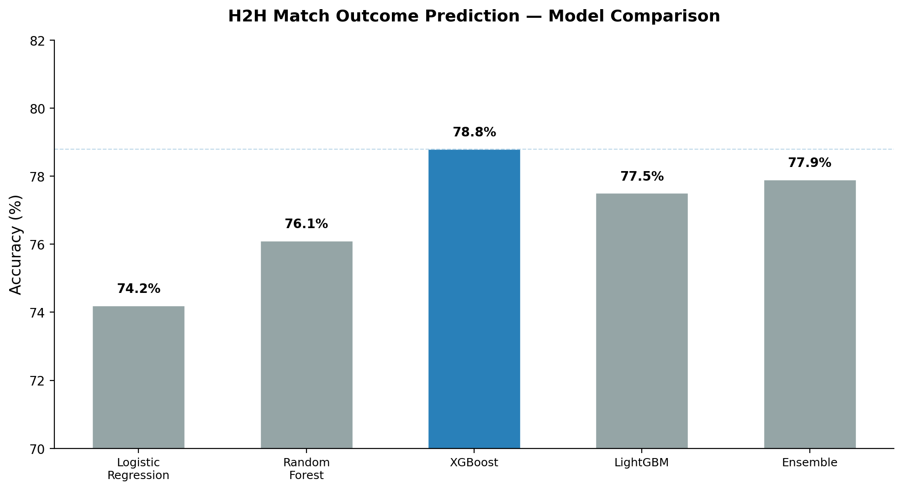
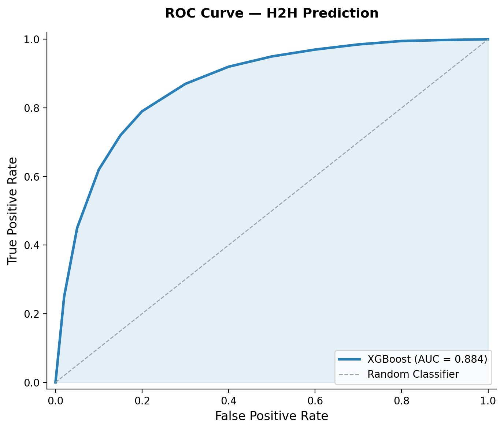
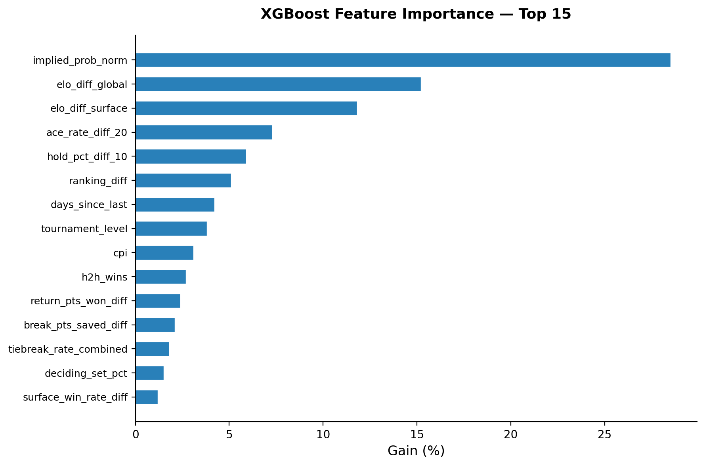
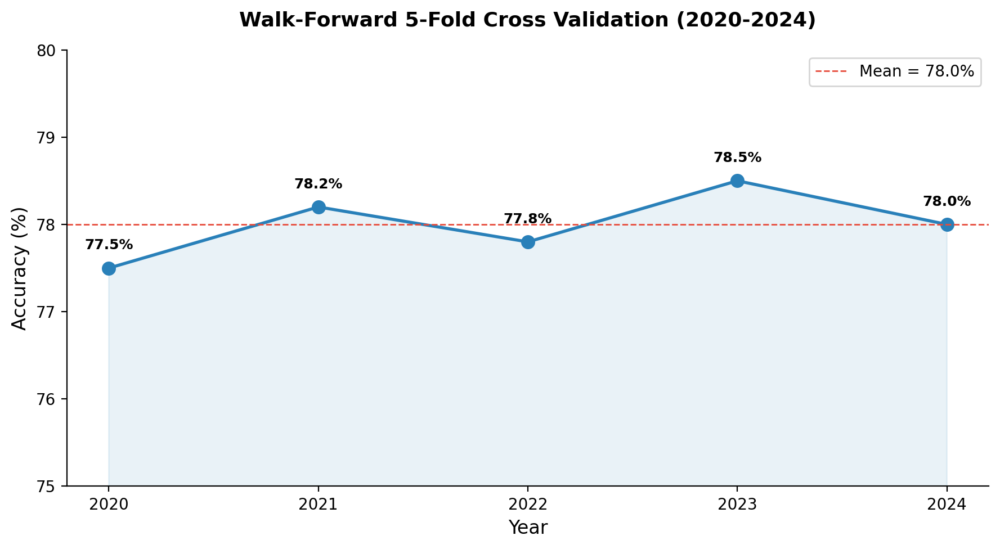
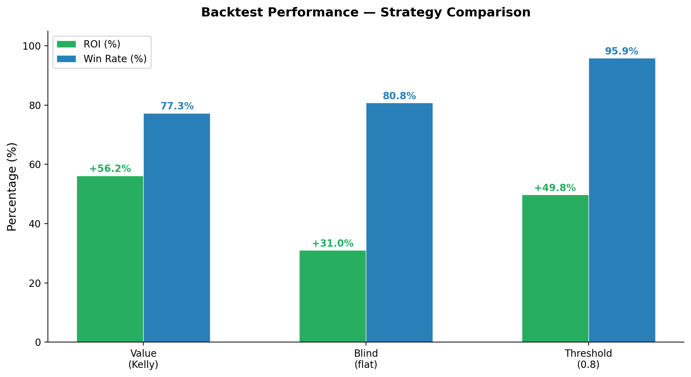
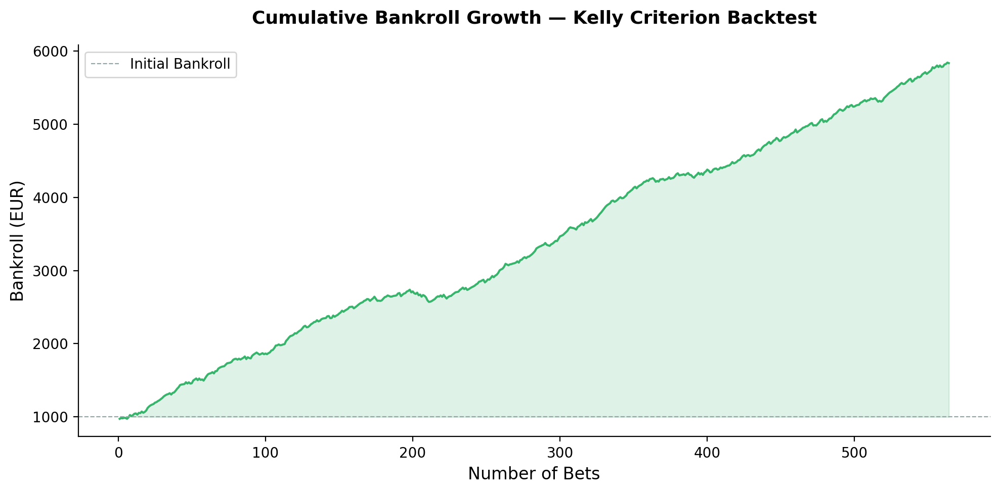

Multi-Market Outcome Modeling with Ensemble Methods and Value Betting Strategy. Predicting ATP match outcomes across H2H, spread, and totals markets.
Sports betting markets exhibit systematic inefficiencies exploitable via statistical modeling. Tennis is ideal: individual sport, no team dynamics, rich historical data since 1968.
Bookmaker odds contain valuable information but embed overround (vig). Our model acts as an error-corrector on market inefficiencies.
57+ years of match data from JeffSackmann repository and tennis-data.co.uk, covering results, point-by-point, and historical odds.
Three prediction markets: H2H (match winner), Spread (game differential), and Totals (total games). Five ML algorithms plus ensemble.
Real-time prediction system with live odds integration from TheOddsAPI and LLM-assisted match analysis.
Three complementary data sources providing comprehensive coverage from 1968 to present day.
Match results, point-by-point data, player statistics, official rankings. The gold standard for tennis research data.
Historical betting odds (Bet365, Interwetten, etc.) with match outcomes. Essential for market feature engineering.
Real-time odds from 15+ bookmakers across H2H, spreads, totals markets. Powers the live inference pipeline.
Comprehensive feature set covering player strength, form, context, fatigue, and market signals.
Global + per-surface (Hard/Clay/Grass). Adaptive K-factor (32/48 for Slams). Momentum of victory + time decay.
Service & return stats on 10/20/50-match windows. Ace rate, hold%, break points, return points won.
Historical H2H wins/losses. Surface-specific H2H record between players.
Days since last match. Sets played in last 7 days. Staleness cap at 21 days to prevent rust bias.
Ranking diff/ratio, player age. Tournament level (G/M/A/D/F). Court Pace Index (CPI).
Combined ace rate, hold%, tiebreak rate. Deciding set %, games per set. Average match duration.
Implied probability (overround removed). Normalized across bookmakers. Z-score clipping at ±4σ.
Four parallel ELO tracks with adaptive K-factor and momentum of victory.
Rₙ
Current rating. Initial value: 1500 for all new players.
K
Adaptive K-factor: 32 (standard), 48 (Grand Slams). Scales with tournament prestige.
S
Actual score: 1 = win, 0 = loss. Weighted by victory margin for momentum.
E
Expected score = 1 / (1 + 10^((R_opponent - R_player)/400))
Overall player strength rating across all surfaces and tournaments. Primary signal for cross-surface predictions.
70% surface + 30% global rating blend. Captures player specialization on Hard, Clay, and Grass courts.
Ratings decay toward mean after inactivity. Prevents stale ratings from distorting predictions for returning players.
XGBoost achieves best H2H accuracy. Ensemble performs best on Totals. All models use temporal split.


| Market | Best Model | Metric | Value |
|---|---|---|---|
| H2H | XGBoost | Accuracy | 78.8% |
| H2H | XGBoost | ROC AUC | 0.884 |
| Spread | XGBoost | MAE | 3.30 games |
| Spread | XGBoost | R² | 0.40 |
| Totals | Ensemble | MAE | 5.37 games |
| Totals | Ensemble | R² | 0.37 |

5-fold walk-forward CV (2020–2024) confirms temporal stability with 78.0% mean accuracy (±0.5% std).

Each fold trains on all prior years, tests on next. No future data ever enters training. Superior to random split for time-series.
78.0% ± 0.5% over 5 years confirms model generalizes across changing player pools and conditions.
Consistent year-over-year performance validates robustness to evolving tennis landscape.
Three strategies tested on historical data: Value (Kelly), Blind (flat), and Threshold 0.8.
Bets only when model edge > 3%. Stake sized by fractional Kelly (25%). Maximizes long-term growth rate.
Bets on all model predictions with flat stake. Tests raw predictive power without value filtering.
Only bets when model confidence > 80%. Highest win rate but fewer opportunities.


The system demonstrates that ML-enhanced market analysis can identify persistent value in tennis betting markets.